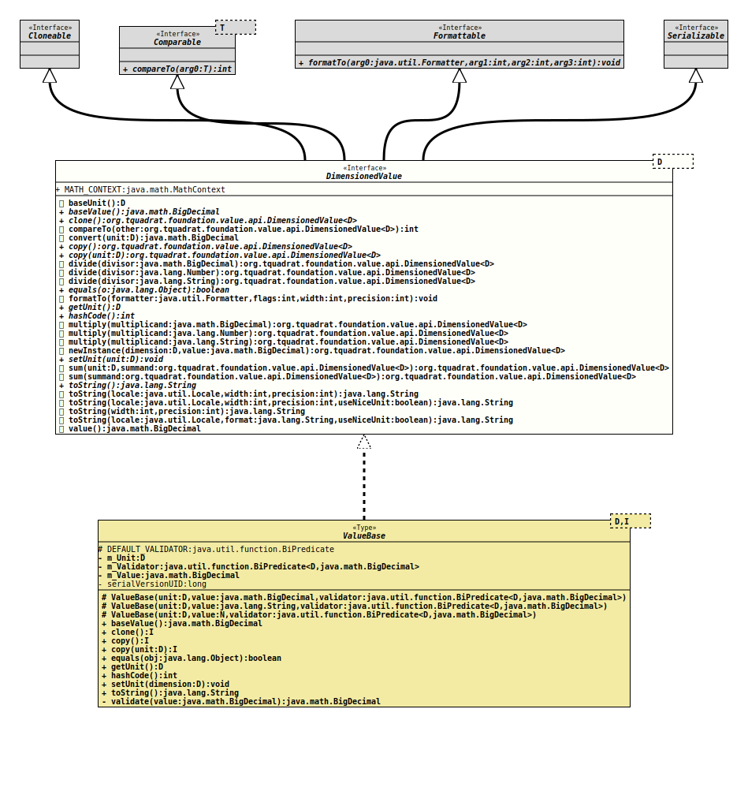

Interface DimensionedValue<D extends Dimension>
- Type Parameters:
D- The dimension.
- All Superinterfaces:
Cloneable,Comparable<DimensionedValue<D>>,Formattable,Serializable
- All Known Implementing Classes:
AreaValue,DataSizeValue,EnergyValue,ForceValue,LengthValue,MassValue,PowerValue,PressureValue,SpeedValue,TemperatureValue,TimeValue,ValueBase,VolumeValue
The definition for a value with a dimension.
Although the unit for the dimension may be changed, instances of
classes implementing this interface can be assumed to be immutable as the
value remains always the same. So at least the results of the
methods
equals(Object),
hashCode(),
and
compareTo(DimensionedValue)
will remain always the same
(while the results from
toString()
may differ after a call to
setUnit(Dimension)).
All concrete (non-abstract) implementations of this interface should be
final.
- Author:
- Thomas Thrien (thomas.thrien@tquadrat.org)
- Version:
- $Id: DimensionedValue.java 1072 2023-09-30 20:44:38Z tquadrat $
- Since:
- 0.1.0
- UML Diagram
-

UML Diagram for "org.tquadrat.foundation.value.api.DimensionedValue"
{kind=link}
-
Field Summary
FieldsModifier and TypeFieldDescriptionstatic final MathContextTheMathContextthat is used for all the operations with dimensioned values. -
Method Summary
Modifier and TypeMethodDescriptiondefault DbaseUnit()Returns the base unit of the dimension for the value.Returns the base value (this value, converted to the base unit).clone()Creates a new copy of this value.default intcompareTo(DimensionedValue<D> other) default BigDecimalConverts this value to the given unit and returns the numerical value.copy()Creates a new copy of this value.Creates a new copy of this value.default DimensionedValue<D> Divides the value by a dimension-less value and returns the result without changing this instance.default DimensionedValue<D> Divides the value by a dimension-less value and returns the result without changing this instance.default DimensionedValue<D> divide(BigDecimal divisor) Divides the value by a dimension-less value and returns the result without changing this instance.booleandefault voidgetUnit()Returns the unit for the value.inthashCode()default DimensionedValue<D> Multiplies the value by a dimension-less value and returns the result without changing this instance.default DimensionedValue<D> Multiplies the value by a dimension-less value and returns the result without changing this instance.default DimensionedValue<D> multiply(BigDecimal multiplicand) Multiplies the value by a dimension-less value and returns the result without changing this instance.default DimensionedValue<D> newInstance(D dimension, BigDecimal value) Creates an instance for the class.voidApplies another unit for the value.default DimensionedValue<D> sum(D unit, DimensionedValue<D> summand) Creates a new instance with the sum of this and the given value, and returns that.default DimensionedValue<D> sum(DimensionedValue<D> summand) Creates a new instance with the sum of this and the given value, and returns that.toString()Returns the String representation for this valuedefault StringtoString(int width, int precision) Provides a String representation of this valuedefault StringProvides a String representation of this valuedefault StringProvides a String representation of this valuedefault StringProvides a String representation of this valuedefault BigDecimalvalue()Returns the numerical value.
-
Field Details
-
MATH_CONTEXT
TheMathContextthat is used for all the operations with dimensioned values.
-
-
Method Details
-
baseUnit
Returns the base unit of the dimension for the value.- Returns:
- The base unit.
-
baseValue
Returns the base value (this value, converted to the base unit).
According to the result, this is the same as calling
.convert( baseUnit() );- Returns:
- The numerical value as for the base unit.
- See Also:
-
clone
Creates a new copy of this value.- Returns:
- The copy.
-
compareTo
The comparison is made based on the
baseValue().- Specified by:
compareToin interfaceComparable<D extends Dimension>
-
convert
Converts this value to the given unit and returns the numerical value.- Parameters:
unit- The unit.- Returns:
- The numerical value of this instance, based on the provided unit.
- See Also:
-
copy
Creates a new copy of this value.- Returns:
- The copy.
- See Also:
-
copy
Creates a new copy of this value.- Parameters:
unit- The unit for the new copy.- Returns:
- The copy.
- See Also:
-
divide
Divides the value by a dimension-less value and returns the result without changing this instance.- Parameters:
divisor- The divisor.- Returns:
- The new value.
-
divide
Divides the value by a dimension-less value and returns the result without changing this instance.- Parameters:
divisor- The divisor.- Returns:
- The new value.
-
divide
Divides the value by a dimension-less value and returns the result without changing this instance.- Parameters:
divisor- The divisor; it must be possible to parse the given String into aBigDecimal.- Returns:
- The new value.
- Throws:
NumberFormatException- The provided value cannot be converted into aBigDecimal.- See Also:
-
equals
Two instances of a class implementing this interface are equals if they are of the same class and if their values, converted to the base dimension, are equals.
-
formatTo
The precision is applied to the numerical part only. The width includes the unit symbol, too.
- Specified by:
formatToin interfaceFormattable- Note:
-
- In case the
formatterargument isnull, this method throws aNullPointerExceptionand not the usualNullArgumentException, because this method is usually called by instances ofjava.util.Formatter, and those do not know about our special exceptions.
- In case the
- Throws:
NullPointerException- Theformatterargument isnull.- See Also:
-
getUnit
Returns the unit for the value.- Returns:
- The unit.
-
hashCode
int hashCode()The hash code is based on the base value and base unit only.
-
multiply
Multiplies the value by a dimension-less value and returns the result without changing this instance.- Parameters:
multiplicand- The multiplier.- Returns:
- The new value.
-
multiply
Multiplies the value by a dimension-less value and returns the result without changing this instance.- Parameters:
multiplicand- The multiplier.- Returns:
- The new value.
-
multiply
Multiplies the value by a dimension-less value and returns the result without changing this instance.- Parameters:
multiplicand- The multiplier; it must be possible to parse the given String into aBigDecimal.- Returns:
- The new value.
- Throws:
NumberFormatException- The provided value cannot be converted into aBigDecimal.- See Also:
-
newInstance
Creates an instance for the class.- Parameters:
dimension- The dimension for the new instance.value- The value for the new instance.- Returns:
- The new instance.
-
setUnit
Applies another unit for the value. This does not affect the results ofequals(Object),hashCode()} andcompareTo(DimensionedValue), nor that ofbaseValue().- Parameters:
unit- The new unit.
-
sum
Creates a new instance with the sum of this and the given value, and returns that.- Parameters:
unit- The unit for the new instance.summand- The value to add.- Returns:
- The instance with the sum.
-
sum
Creates a new instance with the sum of this and the given value, and returns that. The unit for the new instance is that of this instance.- Parameters:
summand- The value to add.- Returns:
- The instance with the sum.
-
toString
Returns the String representation for this value; usually, this is in the format
<numerical value> <unit symbol>like "
4.5 m".The precision for the mantissa is provided by the unit.
If more control over the output format is required, see
toString(int, int). -
toString
Provides a String representation of this value, in the format
<numerical value> <unit symbol>for the given
Localethat determines the decimal separator, like "4.5 m" vs. "4,5 m".The precision is applied to the numerical part only. The width includes the unit symbol, too.
- Parameters:
locale- The locale to use.width- The minimum number of characters to be written to the output. If the length of the converted value is less than the width then the output will be padded by ' ' until the total number of characters equals width. The padding is at the beginning, as numerical values are usually right justified. Ifwidthis -1 then there is no minimum.precision- – The number of digits for the mantissa of the value. Ifprecisionis -1 then there is no explicit limit on the size of the mantissa.- Returns:
- The String representation for this value.
-
toString
Provides a String representation of this value, in the format
<numerical value> <unit symbol>for the given
Localethat determines the decimal separator, like "4.5 m" vs. "4,5 m".The precision is applied to the numerical part only. The width includes the unit symbol, too.
- Parameters:
locale- The locale to use.width- The minimum number of characters to be written to the output. If the length of the converted value is less than the width then the output will be padded by ' ' until the total number of characters equals width. The padding is at the beginning, as numerical values are usually right justified. Ifwidthis -1 then there is no minimum.precision- – The number of digits for the mantissa of the value. Ifprecisionis -1 then there is no explicit limit on the size of the mantissa.useNiceUnit-trueif the methodunitSymbolForPrinting()should be used to retrieve the unit symbol,falseif the usual one is sufficient.- Returns:
- The String representation for this value.
-
toString
Provides a String representation of this value, in the format
<numerical value> <unit symbol>and for the default Locale, like "
4.5 m", where the Locale determines the decimal separator.The precision is applied to the numerical part only. The width includes the unit symbol, too.
- Parameters:
width- The minimum number of characters to be written to the output. If the length of the converted value is less than the width then the output will be padded by ' ' until the total number of characters equals width. The padding is at the beginning, as numerical values are usually right justified. Ifwidthis -1 then there is no minimum.precision- – The number of digits for the mantissa of the value. Ifprecisionis -1 then there is no explicit limit on the size of the mantissa.- Returns:
- The String representation for this value.
-
toString
default String toString(Locale locale, String format, boolean useNiceUnit) throws IllegalFormatException Provides a String representation of this value, in the format that is defined by the provided format String.
That format String must contain exactly one '%f' tag and one '%s' tag; the first takes the numerical value, the second the unit.
The provided
Localedetermines the decimal separator and the optional thousands separator.- Parameters:
locale- The locale to use.format- The format String.useNiceUnit-trueif the methodunitSymbolForPrinting()should be used to retrieve the unit symbol,falseif the usual one is sufficient.- Returns:
- The String representation for this value.
- Throws:
IllegalFormatException- The provided format String is invalid.- See Also:
-
value
Returns the numerical value.- Returns:
- The numerical value, based on current dimension.
-